Cuando se accede a la aplciacion, esta nos redirige directamente a login. En el login encontramos un formulario como este:
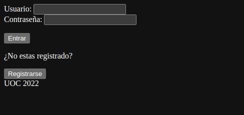Tras introducir un usuario y una contraseña correctas, podemos hacer click en entrar y no redirigira al indice. En el caso de que el usuario o la contraseña no sean correctas nos mostra un alert indicando que son incorrectas:
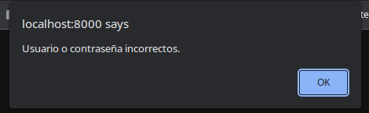En el caso de que falten datos nos mostrara un alert diferente:

Si no disponemos de un usuario y contraseña podemos crear uno haciendo click en el boton Registrarse. Esto nos llevara a un formulario donde podremos registrarnos:
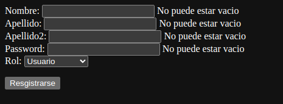En este formulario debemos rellenar todos los campos, sino el usuario no podra crearse. Segun vayamos rellenado campos desaparecera el mensaje que indica que el campo no puede estar vacio:
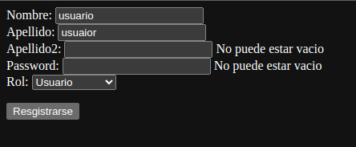En el caso de que introduzcamos un nombre de usuario que ya exista nos redirigira a una vista que nos lo indicara y nos permitira ir al login:
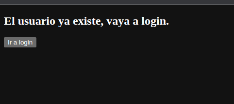Si el usuario se puede crear con existo nos mostrara una vista distinta y nos permitira ir al login:
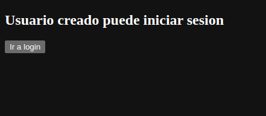El nombre de usuario pasara a ser la combinacion del nombre mas el segundo apellido mas el tercer apellido, la contraseña sera la qeu hayamos introducido.
Ahora podemos ir al login he introducir las credenciales que hayamos introducido en el registro. En funcion del rol que tenga el usuario vermos distintos menus. En el caso de que el usuario tenga el rol usuario veremos un panel con los actos disponibles el cual nos permite filtralos por dia:
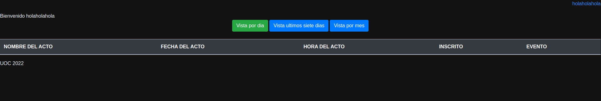Por semana:
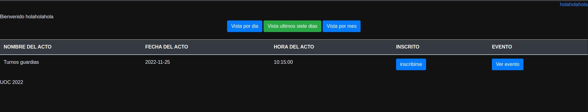O por mes:
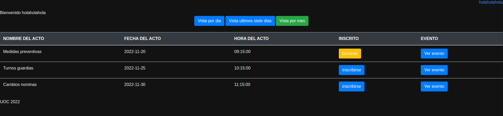En los actos en los que no estemos inscritos, vermos en la columan INSCRITO el boton borrarse, mientras que en los que no estemos inscritos veremos el boton inscribirse.
Si hacemos click en el boton Ver evento de la columna evento veremos una descripcion del evento:
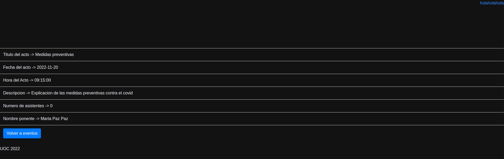Esta vista incluye un boton que nos permite volver al listado de eventos.
Si hacemos click en el boton borrarse veremos un alert que nos confirma que nos hemos borrado y se recargara la pagina:
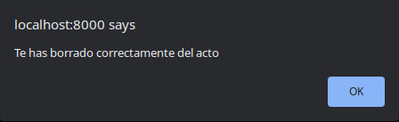Si hacemos click en el boton inscribirse veremos un alert que nos indica que nos hemos inscrito en el evento y se recargara la pagina:
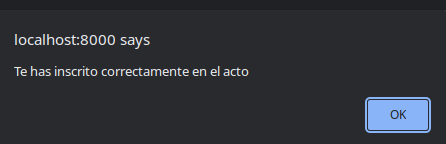